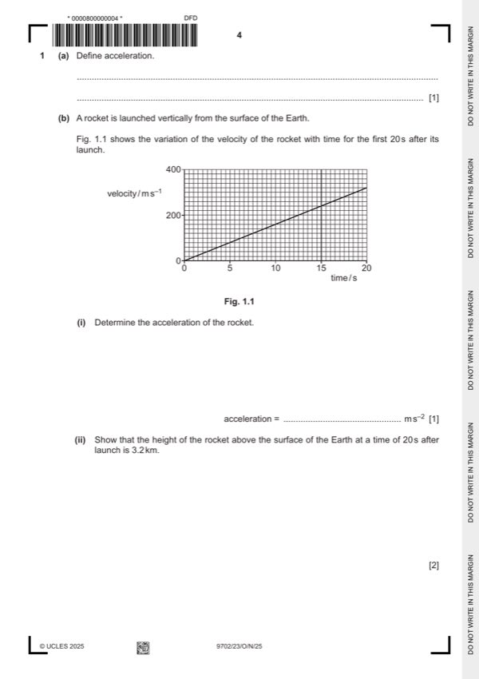

Question 1

Original paper page 4
Part 1(a) — solution
- [B1] Obtain/use: rate of change of velocity
Mark points
- [B1] Obtain/use: rate of change of velocity
Part 1(b)(i) — solution
- [A1] Obtain/use: acceleration = 320 / 20
Mark points
- [A1] Obtain/use: acceleration = 320 / 20
Part 1(b)(ii) — solution
- s= ((u) + v)t or distance = area under graph
Mark points
- s= ((u) + v)t or distance = area under graph
Part 1(c)(ii) — solution
- (EK) = m(v2)
Mark points
- (EK) = m(v2)
Part 1(c)(iii) — solution
- [A1] Obtain/use: power = ((1.5 + 0.91) 1011) / 20
Mark points
- [A1] Obtain/use: power = ((1.5 + 0.91) 1011) / 20